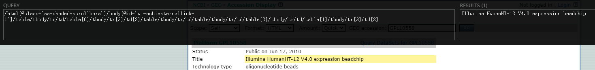

其实自己的爬虫经历比较少，到目前为止也就3次左右的样子。
不过这三次却也获得了不少入门经验，值得总结一下，如果以后遇到更有挑战性的项目，再来丰富。
（以下爬虫内容均基于 python scrapy 库）
参考资料:
爬虫，个人简单理解，就是反向解析网页的操作。在创建网页的时候，会用到对应的语法，包括 HTML、CSS、JS（JavaScript）。而在爬取网页信息的时候，就是解析这些语法，获得目标信息。所以，爬虫过程，相当一部分时间都花在了确定解析式。
在平时需求不高的时候，你甚至可以通过 wget 或 curl 等命令下载网页，使用 grep 等方法利用正则表达式获取想要的信息。
当需要更高级、复杂的信息的时候，专门的爬虫工具就非常方便了。
part1 使用 selector 解析 HTML 文本
selector 是 scrapy 内含的提取 HTML 页面信息的函数功能，可通过 CSS 或 xpath 两种方式的表达式对 HTML 进行解析。
（练习的时候不妨下载一个准备爬取的网页到本地）。
这里我就以生信人经常访问的 NCBI 的 GEO 数据库，查询一个测序项目为例，获取其中的 Title、Organism、Source 等信息。
准备工作
from scrapy.selector import Selector
# 把截图中的页面下载到本地
htmlfile = 'GPL10558.html'
htmlfo = open(htmlfile, 'r', encoding='utf-8')
htmlhandle = htmlfo.read()
pagedata = Selector(text = htmlhandle)寻找解析式
这也是最重要的部分。
前面也谈到过，有 CSS 和 xpath 两种，你可以根据自身情况自行选择。小主我最开始接触 xpath，所以习惯用 xpath 了。scrapy官方文档关于 xpath 的指南。
这里我介绍两种快速获取解析式的方法：
网页中按 F12，进入开发者模式
最开始元素都是折叠起来的
- 点击打开折叠。鼠标放在右侧开发栏，左侧对应位置会有蓝色框标记，如上图，可以根据这一点确定目标元素位置
- 找到目标元素后，右键→ 复制 → 复制xpath;这里以 title 元素为例。建议复制完整xpath
Google 浏览器使用 xpath 插件
自行查找安装和详细教程。
Ctrl+Shift+x快速调出 xpath 界面- 按住 shift，将鼠标放在 目标元素上面，即可获取。
根据解析式获取目标元素
根据第一种方法获得了解析式：
title_xpath = '/html/body/table/tbody/tr/td/table[6]/tbody/tr[3]/td[2]/table/tbody/tr/td/table/tbody/tr/td/table[2]/tbody/tr/td/table[1]/tbody/tr[3]/td[2]'
pagedata.xpath(title_xpath) # 如果你用 css 就是 pagedata.css(title_xpath) 了
# output: []既然这么简单就获得了解析式，为什么这一步要花相当多的时间？
从上面的例子可以看到，其实根据直接 copy 过来的解析式，输出结果为空，也就是解析式不正确。这个问题的原因很多，有的是因为 tbody 的存在导致的问题，也有其他问题，具体问题，具体分析吧。
所以，就要自己手动尝试了：从最开始，一点一点增加信息，直至获得正确的解析式。
pagedata.xpath('/html/body/table')
# output: [<Selector xpath='/html/body/table' data='<table width="740" border="0" cellspa...'>]
pagedata.xpath('/html/body/table/tbody')
# output: [].这里就是 tbody 的问题
pagedata.xpath('/html/body/table/tr/td/table[6]/tr[3]/td[2]/table/tr/td/table/tr/td/table[2]/tr/td/table[1]/tr[3]/td[2]')
# output:[<Selector xpath='/html/body/table/tr/td/table[6]/tr[3]/td[2]/table/tr/td/table/tr/td/table[2]/tr/td/table[1]/tr[3]/td[2]' data='<td style="text-align: justify">Illum...'>]到这已经获得了目标元素。为了获取元素内部的信息，需要加上一些提示：
- .get() 获取第一个匹配内容，字符串格式
- .getall() 获取所有匹配内容，形成列表
- .extract_first() 同 get()
- .extract()
- .extend()
- …
- CSS 还有其他的属性，详见scrapy selector
为了获得 title 对应的文本，就可以这样:
title_xpath_func = title_xpath.replace('tbody/','')
pagedata.xpath(title_xpath_func+'/text()').get()
# output: 'Illumina HumanHT-12 V4.0 expression beadchip'至此，我们就找到了完全正确的解析式。
用同样的方法，你可以处理其他目标信息，等所有目标信息的解析式都修正好之后，可以把它们放在一个字典中
xpath_dict = {
'Title': title_xpath,
'Organism': organism_xpath,
...
}然后将整个的解析过程，包装成一个函数，每个页面的输出结果形成一个字典，循环处理每个页面，最后合并到一起写入文件。
part2 scrapy 爬取网页
在 part1 的基础之下，就可以进一步，爬取在线页面了。
scrapy 主体就要来了：
创建项目
进入你想放置项目代码的文件夹，然后
scrapy startproject tutorial项目目录：
tutorial/
scrapy.cfg # deploy configuration file
tutorial/ # project's Python module, you'll import your code from here
__init__.py
items.py # project items definition file
middlewares.py # project middlewares file
pipelines.py # project pipelines file
settings.py # project settings file
spiders/ # a directory where you'll later put your spiders
__init__.py添加爬虫 spider
在 spiders 子文件夹下创建爬虫文件, 例：
import scrapy
class QuotesSpider(scrapy.Spider):
name = "quotes"
def start_requests(self):
urls = [
'http://quotes.toscrape.com/page/1/',
'http://quotes.toscrape.com/page/2/',
]
for url in urls:
yield scrapy.Request(url=url, callback=self.parse)
def parse(self, response):
page = response.url.split("/")[-2]
filename = f'quotes-{page}.html'
with open(filename, 'wb') as f:
f.write(response.body)
self.log(f'Saved file {filename}')这里看不懂不要急，可跳过。
运行 spider
回到项目顶级目录下，终端运行：
scrapy crawl quotes你不妨根据官网示例走一遍，以获得成就感，给自己做下去的信心~
spider 详解
现在我们再来好好看看 spider 做了什么（scraping cycle）：
scrapy spider
- 首先初始化请求，抓取第一个 url，然后指定一个回调函数（cellback function）从请求中下载响应response（其实就是 part1 中的pagedata，实现了在线网页内容的读取）。根据官网示例，第一个请求就是通过
start_requests()方法获得的，parse 作为Request的回调函数。 - 在回调函数中，使用 Selector（或者其他的库如，BeautifulSoup, lxml等）解析响应，获得目标信息 item object。
- 把 spider 返回的项目加到数据库中（在 items.py 中定义 item）。
spider 中的类型
name指爬虫的名字，在一个项目中，具有唯一性。allowed_domains一个可选的字符串列表，其中包含允许此爬行器爬行的域。假设你的目标网址是 https://www.example.com/1.html ，然后在列表中加上 example.com。start_urls放置网址的列表。这里可以多说两句，如果，你已经有了所有需要爬取的网页网址，全部放在 start_urls 列表中，循环遍历每个页面即可；需要翻页的话，仅把第一页的网址放入即可，通过修改网页中的页数来进行爬取多个页面（如果网址中显示制定了页数的话，如果没有，需要在页面内寻找相应元素，这里不再拓展）。- 其他设置请参见官网。
其实官网的例子是实现了每个网页单独存到一个 HTML 文件中的。我觉得这还没有体现 scrapy 最常用的一个保存每个页面目标元素的方法，就是利用 yield 和 items.py，输出结果。
下面我自己写的一个 spider 用来爬取 NOcode 数据库中的信息：
import scrapy
import re
from lncrna.items import LncrnaItem
class collectlncRNAfromNONcode(scrapy.Spider):
name = 'collect-RNAcent'
allowed_domain = ['noncode.org']
count = 1
base_url = "http://www.noncode.org/browse.php?org=D.Melanogaster&class=transcript&PageSize=500&page="
start_urls = [
"http://www.noncode.org/browse.php?org=D.Melanogaster&class=transcript&PageSize=500&page=1",
]
def parse(self, response):
pages_content = response.xpath("//table[@class='mPlist_infoB']/tr[3]/td/form/table[1]/tbody/tr/td[1]/font/text()").extract()[0]
# 获取页数
page_number = re.findall('Page:\d+',pages_content)[0].split(':')[1]
# 目标信息
for tb in response.xpath("//table[@class='mPlist_infoB']/tr/td/form/table[2]/tr")[1:]:
item = LncrnaItem()
item['name'] = tb.xpath('td/a/text()').extract()[0]
content = tb.xpath('td/text()').extract()
item['chrom'] = content[0]
item['start'] = content[1]
item['end'] = content[2]
# 把 item 中的信息追加到 items 中
yield item
if self.count + 1 <= int(page_number):
self.count += 1
next_url = self.base_url+str(self.count)
# 转到下一页
yield scrapy.Request(next_url, callback=self.parse)
else:
return关于 yield 的详解，可参考python中yield的用法详解
items.py 中的设置
import scrapy
class LncrnaItem(scrapy.Item):
# define the fields for your item here like:
name = scrapy.Field()
chrom = scrapy.Field()
start = scrapy.Field()
end = scrapy.Field()scrapy shell 测试解析式
之前测试解析式都是使用下载到本地的 HTML，scrapy 也要这样吗？当然不需要啦。
在顶级目录下，运行如下命令：
scrapy shell "https://scrapy.org" --nolog然后，shell 获取 URL (使用 Scrapy 下载程序)并打印可用对象列表和 有用的快捷方式(这些行都以[s]前缀开头)：
[s] Available Scrapy objects:
[s] scrapy scrapy module (contains scrapy.Request, scrapy.Selector, etc)
[s] crawler <scrapy.crawler.Crawler object at 0x7f07395dd690>
[s] item {}
[s] request <GET https://scrapy.org>
[s] response <200 https://scrapy.org/>
[s] settings <scrapy.settings.Settings object at 0x7f07395dd710>
[s] spider <DefaultSpider 'default' at 0x7f0735891690>
[s] Useful shortcuts:
[s] fetch(url[, redirect=True]) Fetch URL and update local objects (by default, redirects are followed)
[s] fetch(req) Fetch a scrapy.Request and update local objects
[s] shelp() Shell help (print this help)
[s] view(response) View response in a browser就会进入到 ipython 环境中，利用 part1 中的方法，对 response 进行提取文本的测试，直到找到正确的解析式就好了。
>>> response.xpath('//title/text()').get()
'Scrapy | A Fast and Powerful Scraping and Web Crawling Framework'更多玩法请参考scrapy shell